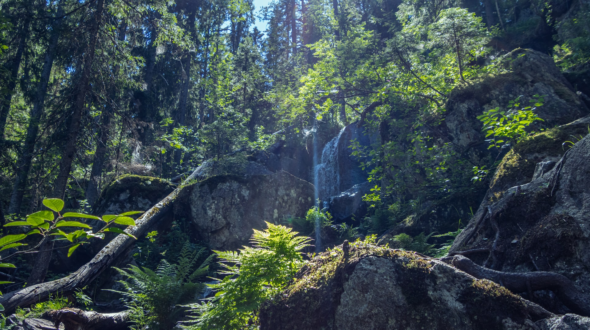

Finlandia
Finlandia es conocida por sus paisajes naturales impresionantes, incluyendo miles de lagos, bosques y montañas. También es el hogar de la Aurora Boreal y es un popular destino para los amantes de la naturaleza. La capital, Helsinki, ofrece una mezcla única de arquitectura moderna y antigua, así como una vibrante vida nocturna y cultura culinaria.
